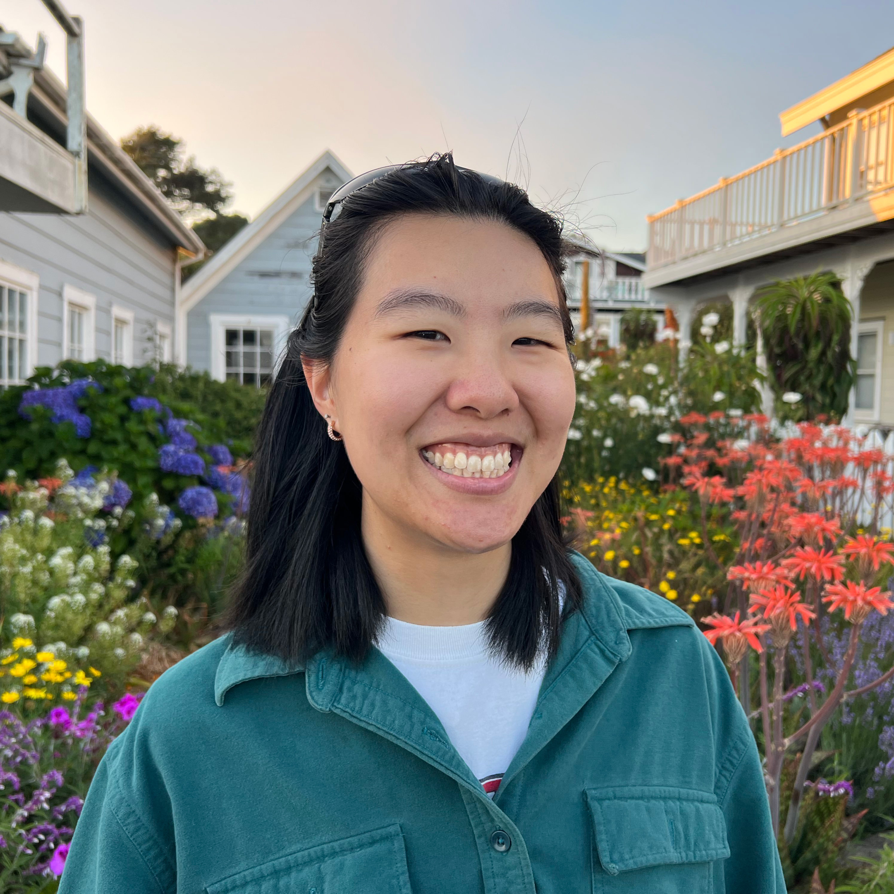

📖 if you're in brooklyn, i'm going to be reading some new poems for the brooklyn book festival at unnameable books on tuesday, september 24 from 7-9pm! (Sep. 2024)
🕵️‍♀️ for the next few months, i'm a fact-checker at in these times. (Sep. 2024)
🅰️ i'm a 2024 margins fellow at the asian american writers workshop. (Apr. 2024)
🯠i got promoted: i'm now an associate editor and development coordinator at kaya press, the only independent publisher focused solely on asian and pacific islander diasporic literature. (Mar. 2024)

i am a queer taiwanese poet, editor, and translator from the bay area. i recently graduated from stanford university where i studied english (poetry) & computer science (biocomputation). through the honors in the arts program, i wrote a zine of persona poems.
some things i'm thinking about: making crosswords, literature in translation, organizing & negative capability.
drop a line at khsu22@stanford.edu. 💌